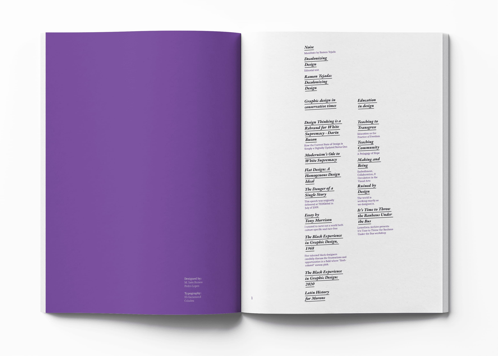
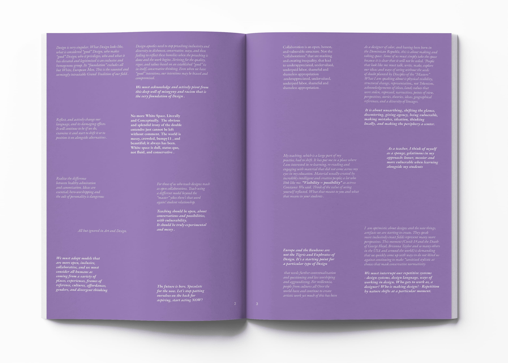
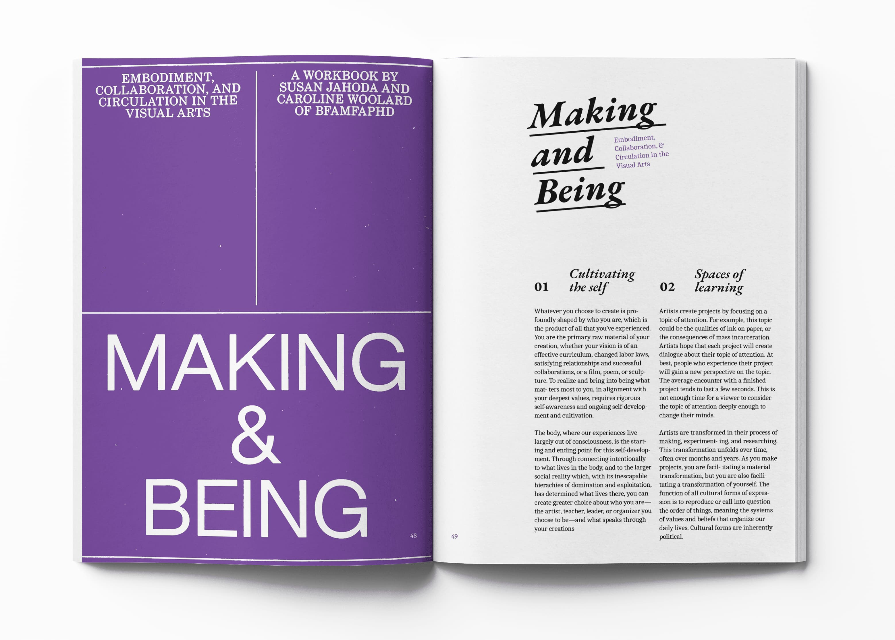
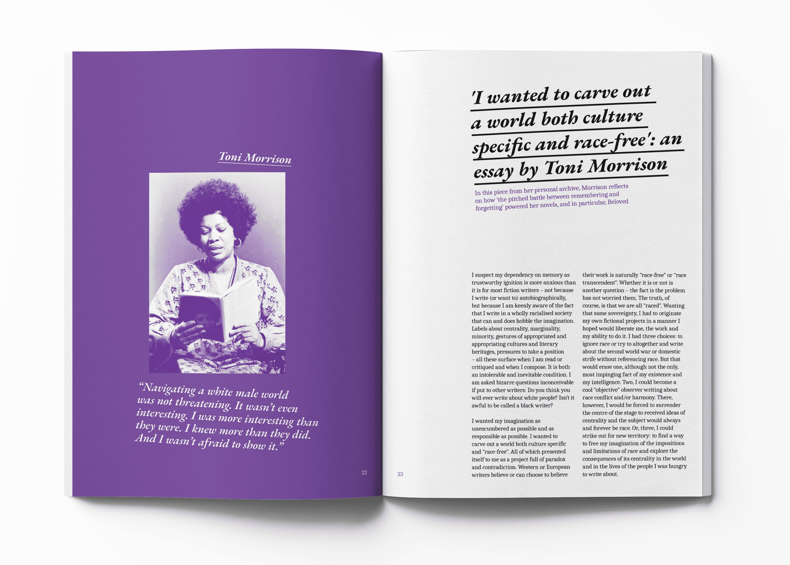

Decolonize design
Design/ Editorial/ Layout
W/ Inês Ramos
(2025)
The manifesto “Noise”, by Ramon Tejada, reflects on the role of design and of the Black designer within a field historically dominated by white perspectives. He argues that we should be “sponges,” open and vulnerable to new lessons and discoveries. Drawing from his experience as a Black and immigrant man, Tejada critiques the power structures that shape design and proposes a more inclusive, political, and human practice. In our magazine, we reflect on how design — historically shaped by Western dogmas — has excluded the contributions of minorities. The Bauhaus, for instance, established a “universal” model of design that undervalued other forms of creation. Ramon Tejada’s manifesto proposes precisely the opposite: an inclusive, experimental, and critical design that values multiple voices and cultural experiences. By engaging with this manifesto, we reinforce the urgency of deconstructing historical hierarchies and recognizing diversity in the development of design — and this reflection is what we aim to pursue here.




For this Editorial I worked on the layout and typography selection, my goal here was to create a soft atmosphere, while still play with tension in these askew elements and text, while mantaining elegance and good reading flow. The purple is used in different opacity settings, being the main color in this project.